О продукте
Содержит большое количество белка
В Parmalat Protein больше белка, чтобы дольше чувствовать сытость, поддерживать тело в тонусе и быть энергичным

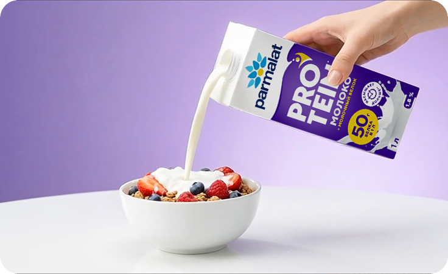
-
На каждый день!
Parmalat Protein подходит для ежедневного рациона, а не только для диет. Его можно брать с собой на работу, спорт или в поездки
-
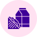
Не содержит лактозу
Около 30% людей не переносят лактозу. Parmalat Protein легко усваивается и даёт возможность не отказывать себе в любимых блюдах
-
Основа для ваших рецептов
Подходит для разных блюд — от напитков до полноценной еды. На сайте мы собрали рецепты, которые можно легко приготовить
Почему белок
так важен для нас?
-
Насыщает дольше
Белок дольше усваивается, поэтому чувство сытости сохраняется дольше*
-
Помогает быть активными энергичными
Современный ритм жизни часто приводит к недобору белка, который очень важен для стабильного уровня энергии, восстановления и нормальной работы организма
-
Помогает поддерживать форму и тонус
Белок участвует в работе обмена веществи помогает сохранять мышечную массу и тонус тела
*по сравнению с безлактозным ультрапастеризованным молоком PARMALAT COMFORT с массовой долей жира 1,8%
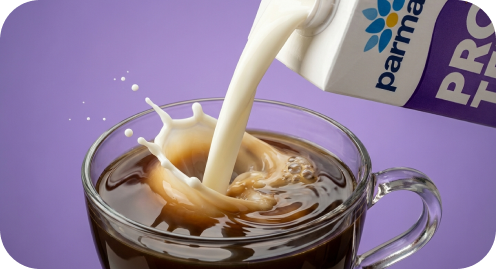
*по сравнению с безлактозным ультрапастеризованным молоком PARMALAT COMFORT с массовой долей жира 1,8%
Сравнение с другими
источниками белка
В 2-х стаканах
Parmalat Protein 25 г белка
В 2-х стаканах
Parmalat Protein 25 г белка
-
∼ 80 г
куриной грудки -
∼ 120 г лосося
-
∼ 5 шт яиц
Взрослому человеку нужно в среднем 1–1,5 г белка на 1 кг веса в день
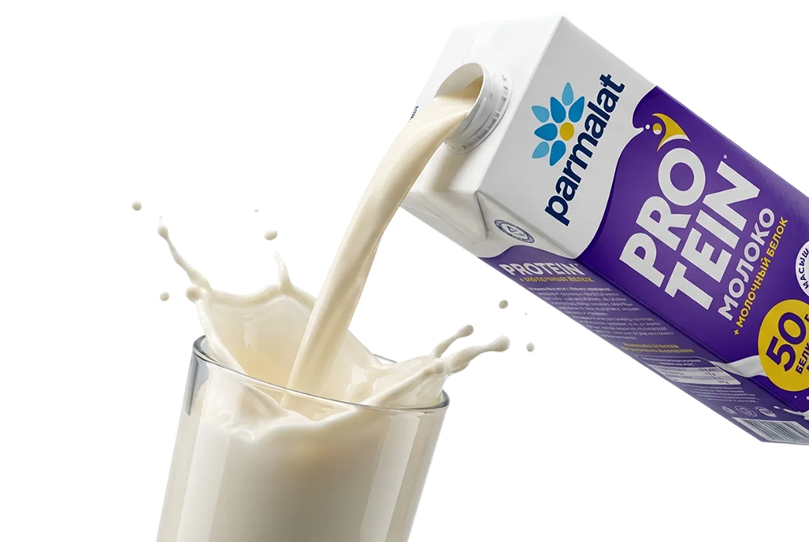
Parmalat Protein — для достижения ваших целей
Для тех, кто много работает и живёт в быстром ритме
В Parmalat Protein больше белка, чтобы дольше чувствовать сытость, поддерживать
тело в тонусе
и быть энергичным
Для тренировок и восстановления
Parmalat Protein ускоряет восстановление мышц, помогает сохранять и набирать мышечную массу, удобно закрывает белковое окно до или после тренировки
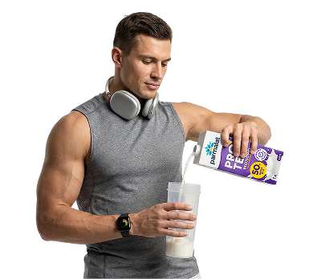
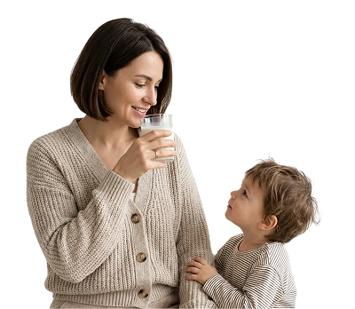
Для тех, кто постоянно
в заботах и часто ест «на бегу»
Parmalat Protein — простой способ поддержать силы и здоровье, не пропуская питание и не усложняя быт — выпил и получил нужную норму белка
Ассортимент
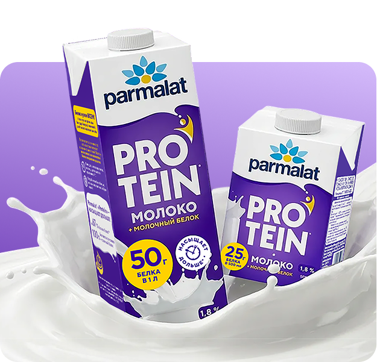
Parmalat Protein
Стандартный формат – 1 л 50 г белка на 1 л
Насыщает дольше!*
Умный формат – 500 млМожно взять на прогулку и пить
в течение дня
*по сравнению с безлактозным ультрапастеризованным молоком PARMALAT COMFORT с массовой долей жира 1,8%
Parmalat Protein КоллагеН
Стандартный формат — 1 л Состав: Молоко + коллаген
50 г белка на литр
(18 г из них —
коллаген)
Ваша забота о мышцах
и суставах!
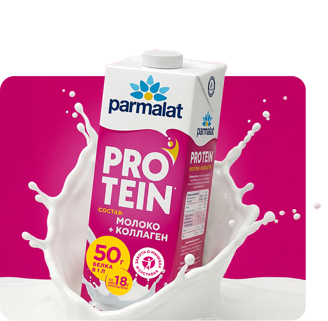
Польза коллагена
Поддерживает мышцы и суставы
Поддерживает здоровье сухожилий
Замедляет возрастные изменения
Поддерживает здоровье кожи, волос и ногтей
Улучшает состояние связок
Способствует заживлению тканей
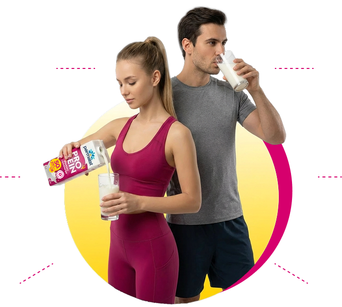
Факты о коллагене
-
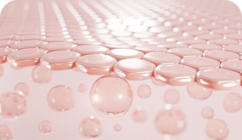
Коллаген — основной белок соединительной ткани, который действует как каркас, скрепляющий клетки и придающий прочность всем системам
-
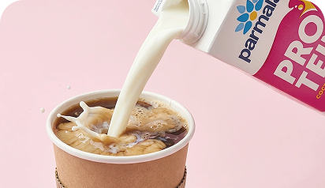
Коллаген при переваривании в желудке расщепляется на аминокислоты, которые затем используются там, где организм больше всего нуждается в белке
-
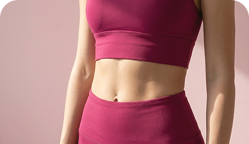
Коллаген актуален не только для спорта, но и для повседневной нагрузки: работа, стресс, недосып. Коллаген помогает справиться с последствиями
Рецепты нутрициолога:
Где купить?
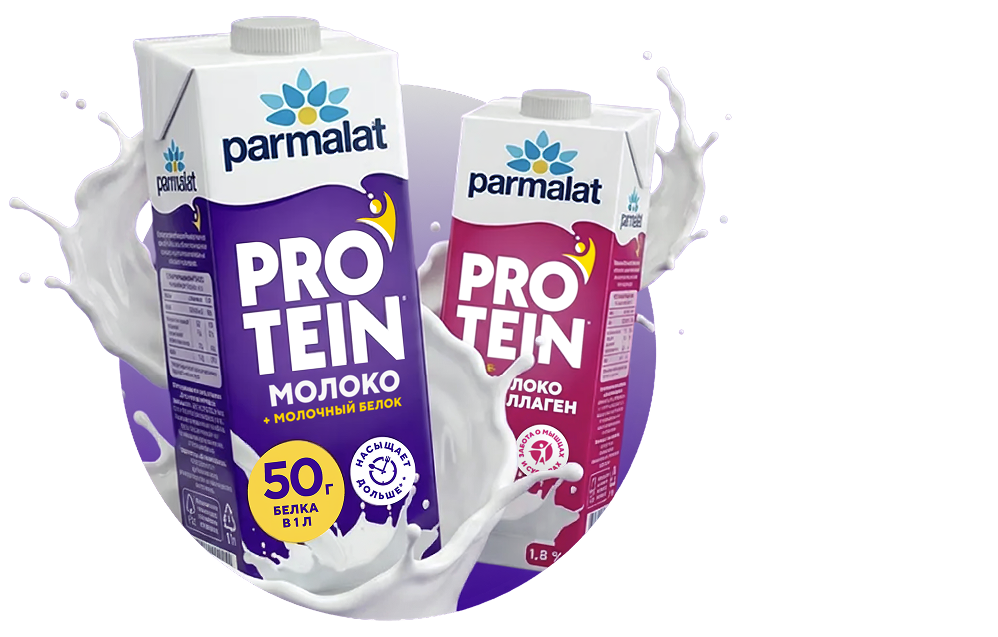
Молоко Parmalat Protein можно купить здесь:
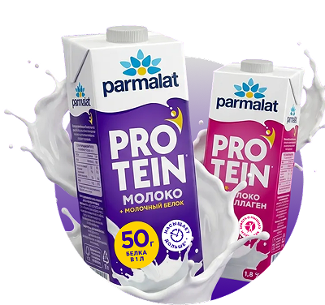
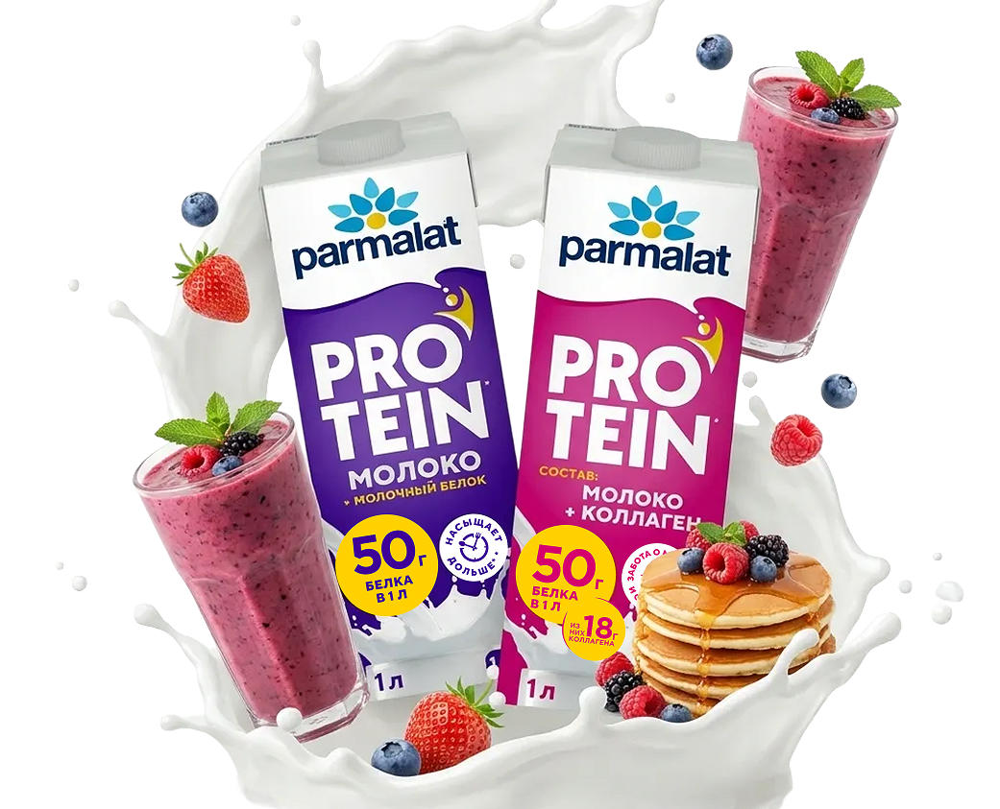
Вступайте в наш клуб, чтобы получить гайд с белковыми рецептами
В гайде собраны лайфхаки, как получать норму белка каждый день.
Вопросы и ответы:
Parmalat Protein — это молоко с высоким содержанием белка (50 г. на литр) для тех, кто следит за его потреблением, занимается спортом или просто хочет дольше чувствовать сытость.
Parmalat Protein — безлактозное молоко. Сладковатый вкус появляется благодаря ферменту, который разделяет молочный сахар (лактозу) на две составляющие: глюкозу и галактозу. Они ощущаются нашими рецепторами гораздо слаще, чем обычная лактоза, хотя общего сахара в составе не прибавилось.
Белок в Parmalat Protein — это натуральный молочный белок, а не искусственные добавки или соя. Его получают из обычного коровьего молока с помощью технологии ультрафильтрации:
Как это работает: Сырое молоко пропускают через тончайшие мембраны (фильтры).
Что происходит: Лишняя вода и часть сахара уходят, а белок и кальций задерживаются и концентрируются.
Результат: В итоговый пакет попадает то же самое молоко, но в котором протеина физически стало в 2 раза больше на тот же объем.
В составе Parmalat Protein нет добавленного сахара (сахарозы) и нет искусственных подсластителей (вроде стевии или аспартама). Весь сахар, который вы видите в таблице пищевой ценности — это природный молочный сахар, который изначально был в молоке.
Protein — это ультрапастеризация. Благодаря мгновенному нагреву до высоких температур и асептической упаковке молоко хранится долго даже без консервантов.
Основные правила:
До вскрытия: Пакет может спокойно стоять в кухонном шкафу при температуре от +2°C до +25°C. Холодильник не обязателен. Срок годности в закрытом виде обычно составляет 6 месяцев.
После вскрытия: Срок жизни молока резко сокращается. Его нужно обязательно убрать в холодильник и употребить в течение 48 часов.
Замораживание: Не рекомендуется. При разморозке структура белка может измениться, и молоко пойдет «хлопьями» или расслоится, потеряв свою приятную плотность.
В молоке используется гидролизованный говяжий коллаген. Такая форма легко усваивается и полностью растворяется в напитке, не меняя его вкуса. Это натуральный источник белка, который помогает поддерживать здоровье суставов, связок и кожи. Именно этот тип коллагена отлично сочетается с безлактозной формулой молока и дополнительным белком. Вы получаете не просто молоко, а сбалансированный продукт для активного образа жизни.